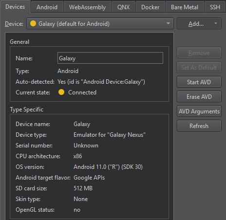
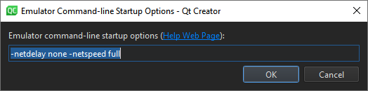

Manage AVDs
To emulate Android devices on Linux, macOS, or Windows, use an Android Emulator. The Android Emulator runs the Android operating system in a virtual machine called an Android Virtual Device (AVD).
To view and add AVDs, go to Preferences > Devices.

Select an AVD in Device to see its status in Current state.
To update the status information, select Refresh.
Start AVDs
To start an AVD, select Start AVD. Usually, Qt Creator starts an AVD when you select it in the kit selector to deploy applications to it.
Set preferences for starting AVDs
To set preferences for starting an AVD, select AVD Arguments.

Set the preferences in Emulator command-line startup options. For available options, see Start the emulator from the command line.
To start the emulator manually from the terminal, enter:
cd <ANDROID_SDK_ROOT>/emulator ./emulator -avd <AVD_NAME>
Remove AVDs
To remove an AVD from the list and the kit selector, select Erase AVD.
See also How To: Develop for Android and Developing for Android.